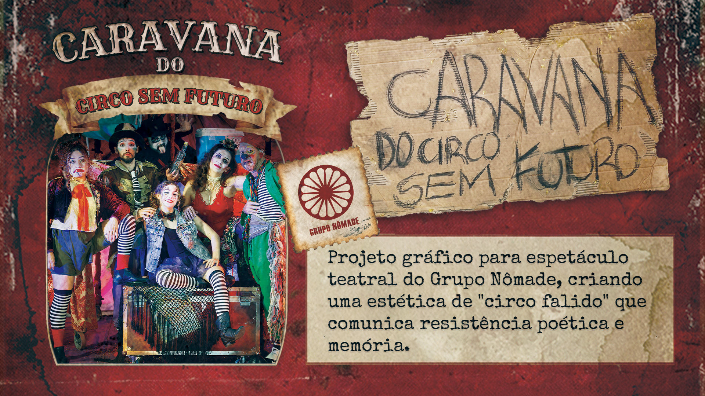
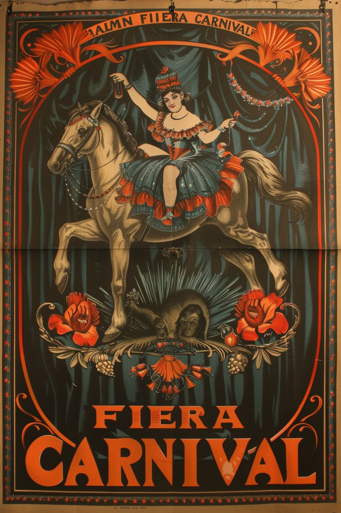
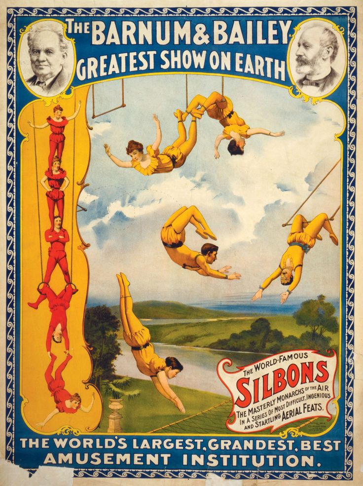
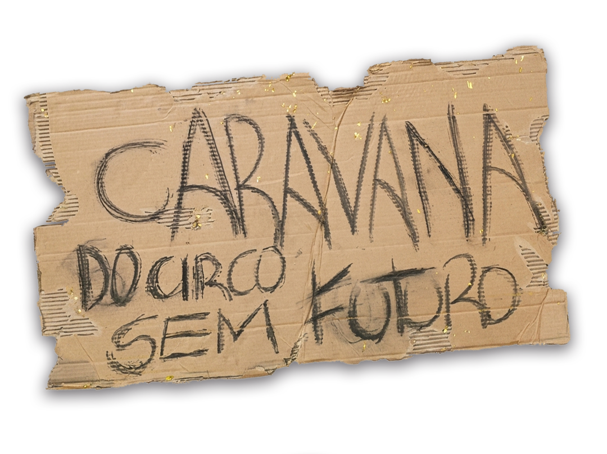
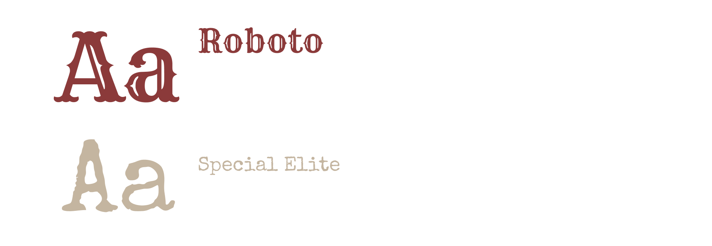
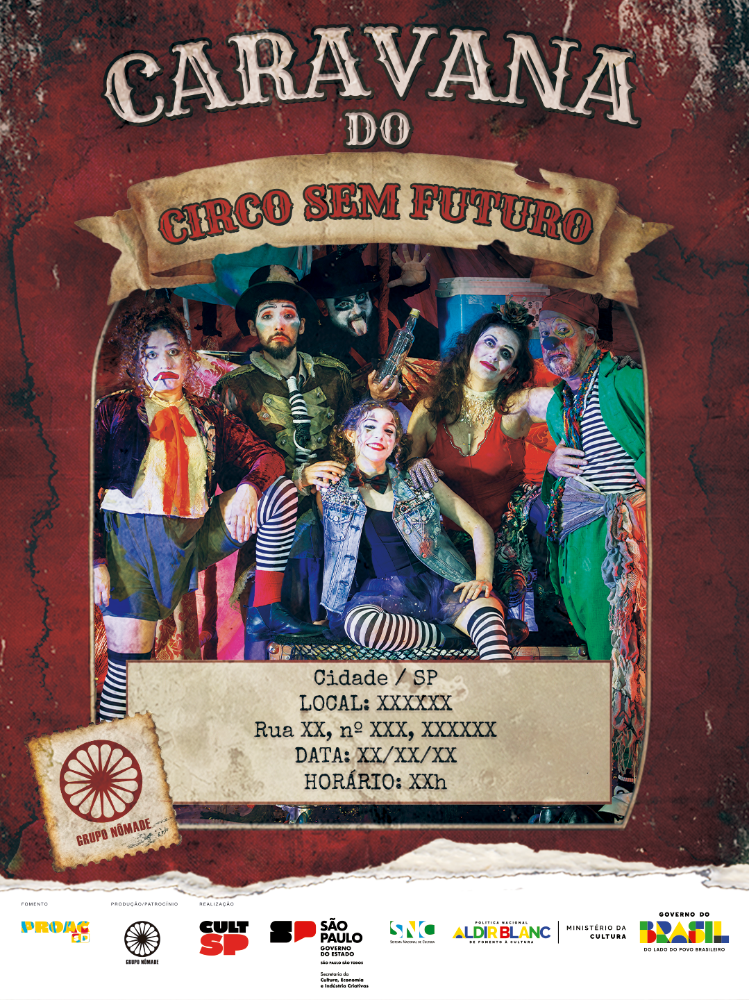
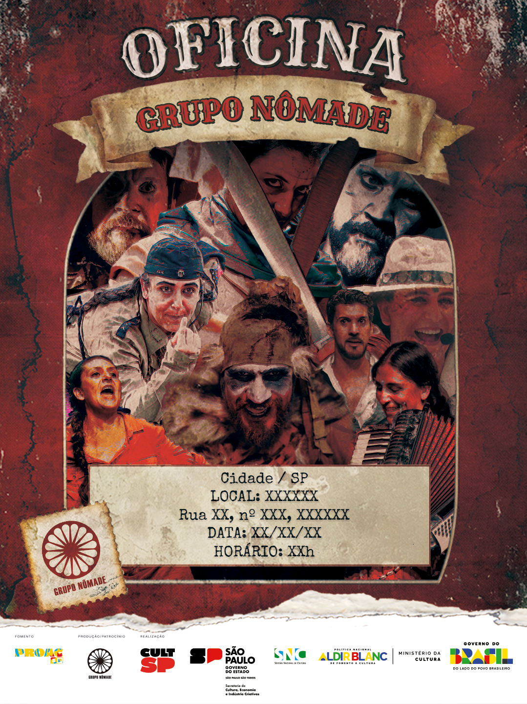

Caravana do Circo sem Futuro
Identidade visual para espetáculo do Grupo Nômade, desenvolvida para traduzir a beleza da ruína, a teatralidade do circo abandonado e de artistas à deriva.
“Beleza na ruína” como linguagem: uma estética que mescla o desgaste, a memória e a teatralidade cirsense.

CASE_03 // CAPA_PRINCIPALREC ●O contexto e o desafio
O Grupo Nômate precisava de uma identidade visual para o espetáculo Caravana do Circo sem Futuro, uma obra que retrata a trajetória de uma trupe de artistas miseráveis que percorre um Brasil marcado pelas desigualdades, sobrevivendo entre fracassos, sonhos e a insistência em continuar fazendo arte.
A estética precisava equilibrar nostalgia, precariedade, teatralidade e decadência. Definimos um caminho pelo a ideia de materiais arruinados que refletissem a passagem do tempo e a resiliência dos artistas ao assumirem para si a decadencia de seu próprio ofício.
Meu papel e escopo
Atuei em toda a direção de arte conceitual para o projeto, criando a identidade visual tanto do pôster principal quanto do sistema gráfico aplicado às redes sociais e ao programa de mão.
- Projeto gráfico do pôster principal
- Peças para redes sociais
- Definição de paleta cromática e tipografia
- Seleção e tratamento de texturas
Processo de design
Primeiro busquei refrêrencias no circo vintage, pedido direto do cliente que tinham essa abordagem como idealização. Essa refêrencia em sim já reforçar a nostalgia, o desgaste, o abandono e a resistência de artistas itinerantes.
Pesquisa e desconstrução do clichê
Comecei estudando pôsteres de circo dos anos 20–30 e identificando seus elementos clássicos: molduras ornamentais, tipografia serifada, cores vibrantes e composição simétrica.
O cliente já tinha posteres separados das quais gostavam do layout. Então uni essas referências com a minha visão de como subverter cada elemento para comunicar decadência.

ESTUDO // FLYERREC ●
ESTUDO // OFICINAREC ●Construção da estética da ruína
Desenvolvi um sistema de texturas sobrepostas: papelão, tecido translúcido, manchas orgânicas e bordas rasgadas.
Ao combinar esses elementos, consegui alcançar o equilíbrio delicado entre “cuidado estético” e “aparência abandonada”, sem perder legibilidade nem impacto visual. Era importante para o cliente que fosse utilizada uma foto do espetáculo. Então houve também um trabalho de envelecimento e composição da foto com o sistema de texturas.
Na primeira versão, o cliente pensava em utilizar um elemento de cenário como título: uma papelão escrito o título da peça.

TEXTURA // RUÍNAREC ●Tipografia
Apesar da abordagem do título do palelão estar alinhada, percebi que a tipografia não dialogava em nada com a principal refência: o circo. Então busquei uma abordagem que incorporasse a essência do circo na tipografia. Escolhi a fonte Rye, que ficaria envelhecida de forma coesa com o resto do layout
Nas peças de redes sociais teriam informações de datas e endereços das apresentações. Utilizei a fonte "Special Elite", que complementava a estética geral do projeto.
Essa estratégia transformou a tipografia, reforçando a narrativa da peça e aproximando a linguagem gráfica da temática do espetáculo.

TIPOGRAFIAREC ●Design
O sistema visual foi definido para funcionar em múltiplos contextos: cartaz principal, material de divulgação, programação e aplicação em redes sociais, sempre mantendo a mesma linguagem de ruína teatral circense.
Defini três cores básicas, com as quais inciava a estética do projeto, mas aos poucos usei variações das mesmas.
Paleta
Tipografia
Títulos: serifada vintage com desgaste aplicado manualmente.
Corpo: manuscrita imperfeita, simulando pintura em papelão.
Hierarquia: construída com tamanho, peso e nível de deterioração.
Elementos gráficos
- Molduras vetorizada
- Pergaminho e papeis desgastados
- Manchas orgânicas
- Bordas irregulares e rasgos
Resultados — relato do cliente
O cliente relatou que a identidade capturou o espírito da peça e conseguiu transmitir sua atmosfera sem cair em clichês. A linguagem visual foi percebida como forte, emocional e narrativa, sem perder a elegância do material gráfico.
Foi também elogiada a forma como os arquivos foram organizados e estruturados, facilitando a implementação de informações e logos de apoios futuros.
Aprendizado
1. Restrição gera criatividade
Ao trabalhar com “decadência”, foi fácil poluir demais o material. A lição foi entender que cada elemento de desgaste precisa ser intencional e posicionado com cuidado, de forma paradoxalmente limpa.
2. Textura é narrativa
A textura foi essencial para o resultado visual esperado. Sem ela, a identidade perderia a força sensorial que a peça precisa para comunicar tempo, ruína e memória.
3. Equilíbrio é tudo
Mesmo em um visual “trash”, o design precisa funcionar, manter legibilidade e impacto visual. O principal foi encontrar um ponto em que a ruína não se tornasse pouco cuidado, mas sim decorativa e honesta.
Peças finais

PEÇA_01 // DIVULGAÇÃO DE ESPETÁCULOREC ●
PEÇA_02 // DIVULGAÇÃO DE OFICINAREC ●